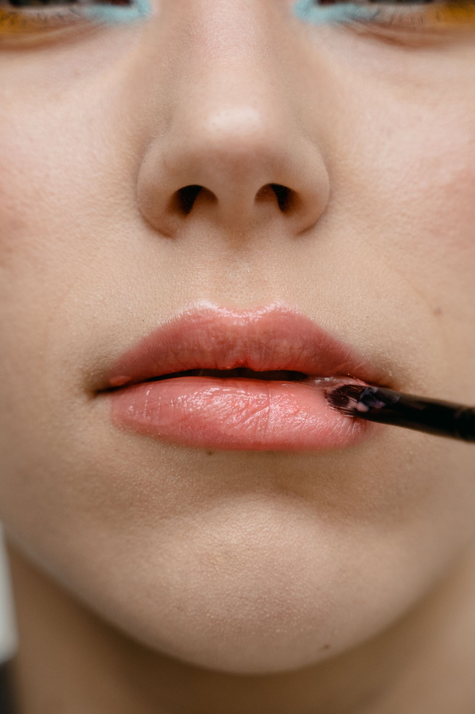
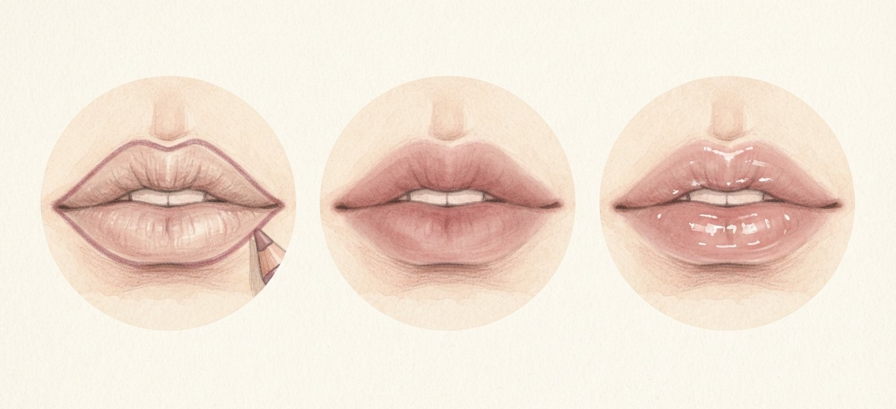
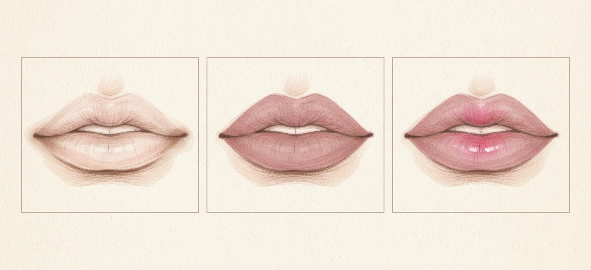
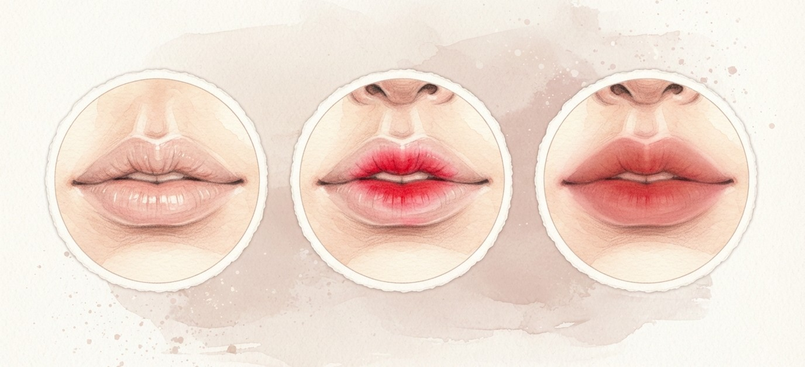
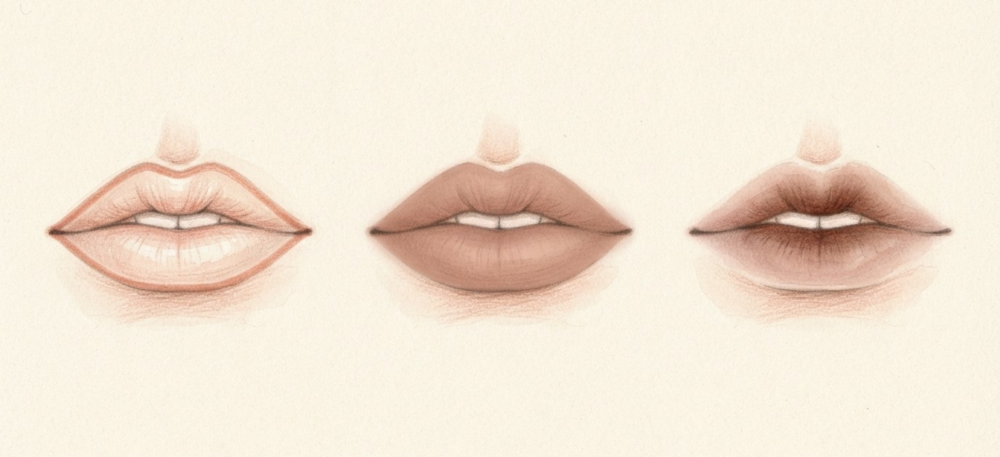

펜슬, 틴트, 글로스까지 차곡차곡.
4가지 방법을 담았어요.

모브 톤 립 펜슬로 입술 라인을 넓혀 원하는 오버립 윤곽을 잡아요.
주름을 메워주는 보송한 블러 틴트를 베이스로 넓게 깔아요.
색이 너무 쨍하면 흰기 도는 투명한 립을 덧발라 채도를 낮춰요.
마지막에 바닐라 빛 볼륨 글로스를 은은하게 얹어요.

바르기 전 파우더로 립밤·유분을 눌러 지속력을 높여요.
단단한 음영 립 쉐이퍼로 입술 아래·입술 산·입꼬리에 그림자를 줘요.
차분한 로지 컬러를 입술 전체에 발라 윤곽을 채워요.
필요하면 입술 중앙에만 생기 있는 컬러를 얹어요.

베이지 핑크·누드 핑크를 베이스로 넓게 깔아요.
그 위 입술 안쪽에만 쨍한 립을 두드려 얹어요.
또는 회색빛 도는 창백한 쿨톤 립과 쨍한 립을 섞어 직접 조색해요.

파운데이션으로 덮지 말고 피치·브라운 펜슬로 칙칙한 입술 라인부터 교정해요.
베이지·브라운 매트 립을 손가락이나 브러시로 톡톡 얇게 밀착해요.
라인이 진해 보이지 않게 펜슬로 경계를 한 번 더 풀어요.
입술이 도톰하면 안쪽에만 발라 여백을 남겨요.
멀멀 립의 핵심은 채도 낮추기. 새로 사지 말고
갖고 있는 쨍한 립에 누드 핑크를 섞어 먼저 만들어 보세요.
저장해두고 쇼핑할 때 꺼내보세요